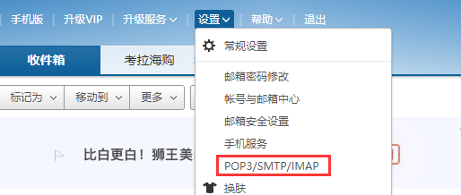
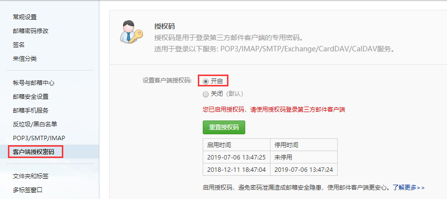
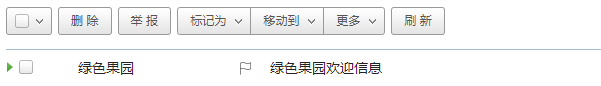
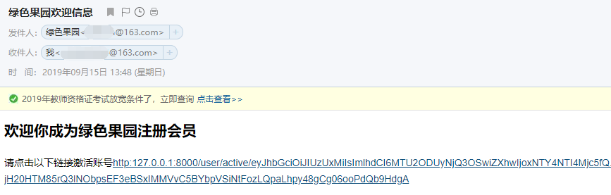
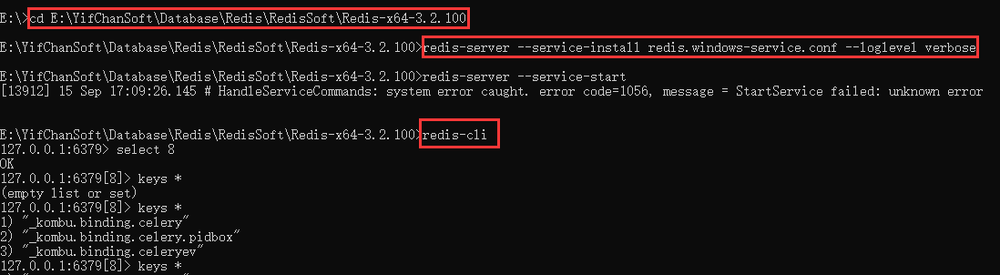
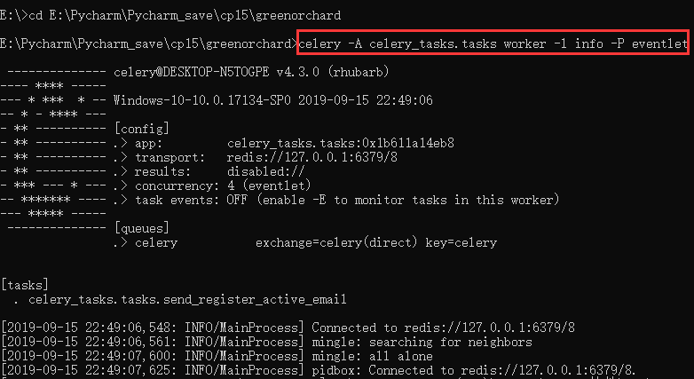
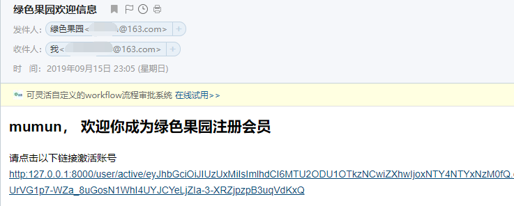

开启stmp服务
以163邮箱为例，点击设置里面的stmp

开启客户端授权密码

如上所示，因为我已经开启了，所以出现的是以上页面。
这样，邮箱的准备就已经完成了。
1.在settings文件中加入以下配置
# 邮件设置
EMAIL_BACKEND = 'django.core.mail.backends.smtp.EmailBackend'
EMAIL_HOST = 'smtp.163.com'
EMAIL_PORT = 25
# 发送邮件的邮箱
EMAIL_HOST_USER = '发送邮件的邮箱'
# 在邮箱中设置的客户端授权密码
EMAIL_HOST_PASSWORD = '授权密码'
# 收件人看到的发件人
EMAIL_FROM = '绿色果园<发送邮件的邮箱>'
2.编写发送邮件代码
from django.shortcuts import render, redirect, HttpResponse
from django.core.mail import send_mail
from itsdangerous import TimedJSONWebSignatureSerializer as Serializer
from django.conf import settings
def emailtest(request):
# 发送激活邮件，包括激活链接：http://127.0.0.1:8000/user/active/3
# 激活链接中需要包含用户的身份信息，并且要把身份信息进行加密
# 加密用户的身份信息，生成激活token
userid = 3
email = "接收邮件的邮箱账号"
serializer = Serializer(settings.SECRET_KEY, 1800)
info = {'confirm': userid}
token = serializer.dumps(info)
token = token.decode()
# 发邮件
subject = "绿色果园欢迎信息"
message = ""
sender = settings.EMAIL_FROM
receiver = [email]
html_message = "<h2>欢迎你成为绿色果园注册会员</h2></br>请点击以下链接激活账号<a href='http:127.0.0.1:8000/" \
"user/active/%s'>http:127.0.0.1:8000/user/active/%s</a>" % (token, token)
send_mail(subject, message, sender, receiver, html_message=html_message)
# 返回应答，跳转到首页
return HttpResponse("邮件发送成功，请注意接收")配套url
urlpatterns = [
url(r'^emailtest/$', views.emailtest, name="emailtest"), # 发邮件测试
]
3.在浏览器中输入如下地址，即可看到“邮件已发送”的提示信息
http://127.0.0.1:8000/user/emailtest/接收邮件如下图所示
收到邮件

邮件内容详情

使用django内置的函数发送邮件时，django给stmp服务器发送邮件需要时间，stmp服务器发送邮件给用户也需要时间，而在发送邮件这段时间内，用户是在等服务端返回应答的，如果等待时间过长，那么无疑会大大的降低用户的体验。
这个时候，我们可以使用celery来异步发送邮件，即Django服务端在celery发送邮件的同时，返回应答给用户。这里，我们使用sleep来模拟发送邮件的时常。
1.安装celery
pip install celery
2.配置settings文件
# 邮件设置
EMAIL_BACKEND = 'django.core.mail.backends.smtp.EmailBackend'
EMAIL_HOST = 'smtp.163.com'
EMAIL_PORT = 25
# 发送邮件的邮箱
EMAIL_HOST_USER = '发送邮件的邮箱'
# 在邮箱中设置的客户端授权密码
EMAIL_HOST_PASSWORD = '客户端授权密码'
# 收件人看到的发件人
EMAIL_FROM = '绿色果园<发送邮件的邮箱>'
# diango的缓存配置
CACHES = {
"default": {
"BACKEND": "django_redis.cache.RedisCache",
"LOCATION": "redis://127.0.0.1:6379/9",
"OPTIONS": {
"CLIENT_CLASS": "django_redis.client.DefaultClient",
}
}
}
3.在项目下新建celery_tasks文件夹，在文件夹中新建tasks文件，编写tasks文件；
from django.core.mail import send_mail
from django.conf import settings
from celery import Celery
import time
# 在任务处理者一端时需要加这几句
# import os
# import django
# os.environ.setdefault("DJANGO_SETTINGS_MODULE", "项目名.settings")
# django.setup()
# 创建一个Celery类的实例对象
app = Celery('celery_tasks.tasks', broker='redis://127.0.0.1:6379/8')
# 定义任务函数
@app.task
def send_register_active_email(to_email, username, token):
"""发送激活邮件"""
subject = "绿色果园欢迎信息"
message = ""
sender = settings.EMAIL_FROM
receiver = [to_email]
html_message = "<h2>%s， 欢迎你成为绿色果园注册会员</h2></br>请点击以下链接激活账号<a href='http:127.0.0.1:8000/" \
"user/active/%s'>http:127.0.0.1:8000/user/active/%s</a>" % (username, token, token)
send_mail(subject, message, sender, receiver, html_message=html_message)
time.sleep(5)
4.在发送邮件的地方调用celery_tasks下的tasks下的发送邮件函数；
from django.shortcuts import render, redirect, HttpResponse
from django.core.mail import send_mail
from itsdangerous import TimedJSONWebSignatureSerializer as Serializer
from django.conf import settings
def emailtest(request):
# 发送激活邮件，包括激活链接：http://127.0.0.1:8000/user/active/3
# 激活链接中需要包含用户的身份信息，并且要把身份信息进行加密
# 加密用户的身份信息，生成激活token
userid = 3
username = "mumun"
email = "收邮件的邮箱"
serializer = Serializer(settings.SECRET_KEY, 1800)
info = {'confirm': userid}
token = serializer.dumps(info)
token = token.decode()
# 使用celery发送邮件
send_register_active_email.delay(email, username, token)
# 返回应答，跳转到首页
return HttpResponse("邮件发送成功，请注意接收")配套url
urlpatterns = [
url(r'^emailtest/$', views.emailtest, name="emailtest"), # 发邮件测试
]
5.开启redis服务；
E:\>cd E:\YifChanSoft\Database\Redis\RedisSoft\Redis-x64-3.2.100
E:\YifChanSoft\Database\Redis\RedisSoft\Redis-x64-3.2.100>redis-server --service-install redis.windows-service.conf --loglevel verbose
E:\YifChanSoft\Database\Redis\RedisSoft\Redis-x64-3.2.100>redis-cli
127.0.0.1:6379> select 8
OK
127.0.0.1:6379[8]> keys *
(empty list or set)
127.0.0.1:6379[8]> keys *
1) "_kombu.binding.celery"
2) "_kombu.binding.celery.pidbox"
3) "_kombu.binding.celeryev"开启redis服务截图

6.将项目代码拷贝一份放在某处，进入该处，启动tasks的worker模式，
注意，用作worker的代码的tasks文件中应该有提前启动django的初始化的代码，不然worker没法调用conf信息；
即应该有以下内容
# 在任务处理者一端时需要加这几句
import os
import django
os.environ.setdefault("DJANGO_SETTINGS_MODULE", "项目名.settings")
django.setup()开启worker模式：
celery -A celery_tasks.tasks worker -l info出现问题，报错如下
ValueError: not enough values to unpack (expected 3, got 0)原因
win10上运行celery4.x就会出现这个问题
解决
pip install eventlet并在开启worker模式时加入参数
celery -A celery_tasks.tasks worker -l info -P eventlet开启worker模式截图，后面还有内容，但因为太多了，就只截一半

7.在浏览器中输入如下地址，即可看到“邮件已发送”的提示信息
http://127.0.0.1:8000/user/emailtest/接收邮件如下
